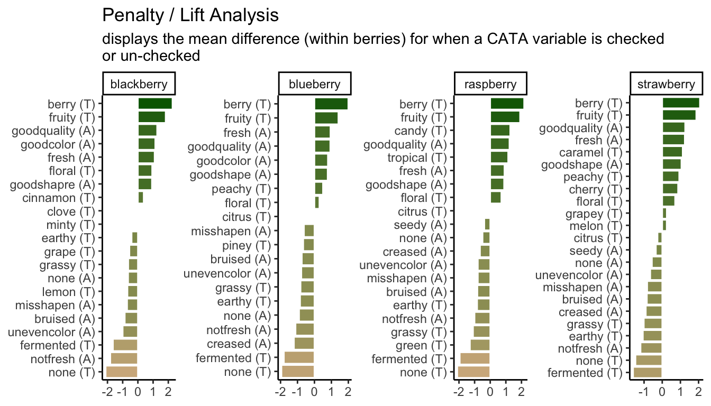

1 Importing and wrangling data
Now that everyone is on the same page for how we’re going to use R, we’re going to dive right into importing our data into R, exploring it, and–most importantly–visualizing it. In this part of the tutorial, we are going to focus on getting data into R and manipulating it.
Personally, I prefer to see the reason for doing something, rather than being shown a bunch of building blocks and not seeing how they fit together. Therefore, we’re going to start off this section with a complete work flow for importing and visualizing some real results, and then work backward as we unpack how and why we’ve taken particular steps.
1.1 Motivation: exploring berry and cider CATA/liking data
Before we begin, we need to make sure we’ve loaded the packages we’re going to use.
1.2 Getting data into R
Before we’re able to analyze anything, we need to get data into R. In the workshop archive you downloaded, the data/ directory has files called clt-berry-data.csv and CiderDryness_SensoryDATA.csv. These are the files that hold the raw data.
1.2.1 Where the data live
To get these data into R, we need to briefly talk about working directories because this is how R “sees” your computer. It will look first in the working directory, and then you will have to tell it where the file is relative to that directory. If you have been following along and opened up the .Rproj file in the downloaded archive, your working directory should be the archive’s top level, which will mean that we only need to point R towards the data/ folder and then the clt-berry-data.csv file. We can check the working directory with the getwd() function.
## [1] "/Users/jake/Library/CloudStorage/Dropbox/Work/Collaborations/2025/pangborn-tutorial-2025"Therefore, relative to the working directory, the file path to this data is data/clt-berry-data.csv. Please note that this is the UNIX convention for file paths: in Windows, the backslash \ is used to separate directories. Happily, RStudio will translate between the two conventions, so you can just follow along with the macOS/UNIX convention (/) in this workshop.
raw_berry_data <- read_csv(file = "data/clt-berry-data.csv")
raw_cider_data <- read_csv(file = "data/CiderDryness_SensoryDATA.csv")As a note, in many countries the separator (delimiter) will be the semi-colon (;), since the comma is used as the decimal marker. To read files formatted this way, you can use the read_csv2() function. If you encounter tab-separated values files (.tsv) you can use the read_tsv() function. If you have more non-standard delimiters, you can use the read_delim() function, which will allow you to specify your own delimiter characters. Excel stores data by default in the .xlsx format, which can be read by installing and using the readxl package (or saving Excel data as .csv). You can also read many other formats of tabular data using the rio package (“read input/output”), which can be installed from CRAN (using, as you have learned, install.packages("rio")).
The read_csv() function creates a type of object in R called a tibble, which is a special type of data.frame. These are rectangular “spreadsheet-like” objects like you would encounter in Excel or manipulate in JMP or SPSS.
1.3 The destination
The plan here is to present “full” workflows for data import, wrangling, and visualization below so as to give a skeleton to work through. This is going to look like a lot of code at once, but I don’t use anything in these workflows that we will not be covering (in some way!) today. Hopefully, by the end of today’s workshop you will be able both to understand and dissect complex code and use it to build your own analyses and visualizations.
1.3.1 Cider
These data come from a small consumer study on 3 commercial “hard” (alcoholic) ciders, served in two conditions (chilled or unchilled) to 48 consumers, who used a pre-defined CATA lexicon, rated overall liking, and evaluated cider “dryness” on a 4-pt, structured line scale. The full details of the study are published in Calvert et al. (2022). Here, we develop a complex and informative Correspondence Analysis (CA) plot of these results, as this is a very common output for sensory scientists.
raw_cider_data <-
read_csv("data/CiderDryness_SensoryDATA.csv")
cider_samples <-
raw_cider_data %>%
select(Sample_Name, Temperature) %>%
unite(Sample_Name, Temperature, col = "sample", sep = " ", remove = FALSE) %>%
distinct()
cider_contingency <-
raw_cider_data %>%
select(Sample_Name, Temperature, Fresh_Apples:Synthetic) %>%
unite(Sample_Name, Temperature, col = "sample", sep = " ") %>%
group_by(sample) %>%
summarize(across(where(is.numeric), ~sum(.))) %>%
column_to_rownames("sample")
ca_cider <-
cider_contingency %>%
FactoMineR::CA(graph = FALSE)
ca_cider_coords <-
ca_cider$row$coord %>%
as_tibble(rownames = "name") %>%
mutate(type = "row") %>%
bind_rows(
ca_cider$col$coord %>%
as_tibble(rownames = "name") %>%
mutate(type = "col")
) %>%
left_join(cider_samples, join_by(name == sample)) %>%
mutate(name = if_else(is.na(Sample_Name), name, Sample_Name),
name = str_replace_all(name, "_", " "),
name = str_replace(name, "FullBodied", "Full Bodied"),
modality = if_else(type == "col",
case_when(name == "Sweet" ~ "Taste",
name == "Bitter" ~ "Taste",
name == "Sour" ~ "Taste",
name == "Smooth" ~ "Mouthfeel",
name == "Dry" ~ "Mouthfeel",
name == "FullBodied" ~ "Mouthfeel",
.default = "Aroma"),
NA))
nice_cider_labels <-
labs(x = str_c("Dimension 1, ", round(ca_cider$eig[1, 2], 1), "% of inertia"),
y = str_c("Dimension 2, ", round(ca_cider$eig[2, 2], 1), "% of inertia"),
subtitle = "Correspondence Analysis biplot (symmetric)",
title = "Effect of cider serving temperature on consumer sensory perception")
p2_ca_cider_cata <-
ca_cider_coords %>%
mutate(font = if_else(type == "row", "plain", "italic")) %>%
ggplot(aes(x = `Dim 1`, y = `Dim 2`)) +
geom_vline(xintercept = 0, linetype = "dashed", color = "darkgrey") +
geom_hline(yintercept = 0, linetype = "dashed", color = "darkgrey") +
geom_point(aes(color = type, shape = Temperature),
data = ca_cider_coords %>% filter(type == "row"),
size = 3) +
ggrepel::geom_text_repel(aes(label = name, color = type, fontface = font),
show.legend = FALSE) +
coord_equal() +
theme_linedraw() +
theme(legend.position = "bottom") +
nice_cider_labels +
scale_color_manual(values = c("darkorange", "darkgreen")) +
scale_shape_manual(values = c(8, 16)) +
guides(shape = guide_legend(),
color = "none")
p2_ca_cider_cata
1.3.2 Berries
Here we are going to import and process data from a study on berries. These data come from a large, central-location study on berries, the methodological details of which are published in Yeung et al. (2021). Very briefly, the data describe the attributes and liking scores reported by consumers for a variety of berries across multiple CLTs. A total of 969 participants (Subject Code) and 23 berries (Sample Name) were involved in these tests, with only one species of berry (blackberry, blueberry, raspberry, or strawberry) presented during each CLT. In the actual experimental design, subjects got multiple sample sets (so there are not 969 unique subjects), but here we will treat them as unique for ease of description.
# Import the data
raw_berry_data <-
read_csv(file = "data/clt-berry-data.csv") %>%
select(where(~ !all(is.na(.))))
cleaned_berry_data <-
raw_berry_data %>%
# Get the relevant columns
select(`Subject Code`,
berry,
sample,
starts_with("cata_"),
contains("overall")) %>%
# Rescale the LAM and US scales to a 9-pt range
mutate(lms_overall = (lms_overall + 100) * (8 / 200) + 1,
us_overall = (us_overall + 0) * (8 / 15) + 1) %>%
# Switch the 3 overall liking columns into a single column
pivot_longer(contains("overall"),
names_to = "hedonic_scale",
values_to = "rating",
values_drop_na = TRUE) %>%
# Let's make all the CATA variables into a single column to make life easier
# (and get rid of those NAs)
pivot_longer(starts_with("cata_"),
names_to = "cata_variable",
values_to = "checked",
names_transform = ~str_remove(., "cata_"),
values_drop_na = TRUE)
berry_penalty_analysis_data <-
cleaned_berry_data %>%
group_by(berry, cata_variable, checked) %>%
summarize(rating = mean(rating),
count = n()) %>%
pivot_wider(names_from = checked,
values_from = c(rating, count),
names_prefix = "checked_") %>%
mutate(penalty_lift = rating_checked_1 - rating_checked_0,
count = count_checked_1, .keep = "none") %>%
ungroup() %>%
# We can tidy up our CATA labels
separate(cata_variable,
into = c("mode", "variable"),
sep = "_",
remove = FALSE) %>%
# Fix a typo
mutate(mode = str_replace(mode, "appearane", "appearance")) %>%
mutate(mode = case_when(mode == "taste" ~ "(T)",
mode == "appearance" ~ "(A)")) %>%
unite(variable, mode, col = "cata_variable_clean", sep = " ")
p1_berry_penalty <-
berry_penalty_analysis_data %>%
# We are using a function from tidytext that makes faceting the final figure
# easier
mutate(cata_variable_clean = tidytext::reorder_within(x = cata_variable_clean,
by = penalty_lift,
within = berry)) %>%
#And finally we plot!
ggplot(mapping = aes(x = cata_variable_clean, y = penalty_lift)) +
geom_col(aes(fill = penalty_lift), color = "white", show.legend = FALSE) +
facet_wrap(~berry, scales = "free", nrow = 1) +
tidytext::scale_x_reordered() +
coord_flip() +
theme_classic() +
scale_fill_gradient(low = "tan", high = "darkgreen") +
labs(x = NULL, y = NULL,
title = "Penalty / Lift Analysis",
subtitle = "displays the mean difference (within berries) for when a CATA variable is checked\nor un-checked")
p1_berry_penalty
1.3.3 “Publication quality”
What do we mean by “publication quality” visualizations? Neither of us are theorists of visualization–for that, we would recommend that you look at the excellent work from Claus Wilke and Kieran Healey. We will not be discussing (in any detail) ideas about which color palettes best communicate different types of data, what kinds of displays are most effective (box plots vs violin plots vs …), or whether pie charts are really so bad (mostly yes).
Rather, we have noticed that most R packages for data analysis provide visualizations as part of their output, and many sensory scientists are using these default outputs in publications. This is annoying because often these visualizations are meant to be part of the data exploration/analysis process: they are not polished or they don’t display the data to its best advantage (whatever that is for the particular case). In this workshop, we want to help you develop the competency to alter or re-make these visualizations for yourself so that you can produce visualizations that are relevant to your application, that are attractive and easy to read.
As an example, the FactoMineR package has excellent default visualizations for exploring and understanding the basic outputs of many common multivariate analyses used by sensory scientists. We can take a look at our cider CATA data visualized as a symmetric CA “biplot” without much effort:

But there might be things about this we want to change! It would be very helpful to know, for example, that this is a ggplot2 object that can be altered by a basic handful of standardized syntax. For example:
p3_cider_factominer +
theme_dark() +
labs(caption = "Now we can say some more things!",
subtitle = "of 6 ciders tasted by 48 subjects")
Like I said, we’re not here to tell you how your plots should look…
Furthermore, default plots often do not allow us to do everything we want to do. Say we were very attached to the orange and green color scheme I used above, and wanted to use it in the nice plot from FactoMineR:

Hmm.
The motivating point, here, is to be able to make visualizations that accomplish what you want them to, rather than being at the mercy of packages that have certain defaults built in.
1.4 Saving your data
Often, you will have an ugly, raw data file. You want to clean up this data file: remove junk variables, rename columns, omit outliers, and have something that is actually workable. Sometimes, you create a new intermediate product (say, a penalty-analysis table) that you’d like to be able to share and work with elsewhere. Now, you know how to do all that in R, often with fewer clicks and less effort than in Excel or other WYSIWYG tool. But once you restart your R session, you will need to rerun this workflow, and you can’t access your data products in other software.
To save this work, you can use write.csv() or readr::write_csv() and its relatives (e.g., functions like write.file()). These will create or overwrite a file in the directory location you specify.
# We will keep in the tidyverse idiom with readr::write_csv()
write_csv(x = berry_penalty_analysis_data,
file = "data/berry-penalty-data.csv")Sometimes, we want to be able to save R data for re-loading later. It’s good to do this explicitly, rather than relying on something like RStudio’s version of autosaving (which we’ve turned off for you at the beginning of this tutorial). You might want to do this instead of write_csv() because:
- You have non-tabular data (lists, tensors, ggplots, etc)
- You are saving the output of time-consuming workflows and want to be able to start again without re-running those workflows
- You want to bundle a lot of objects together into a single file for yourself or other
Rusers
If you want to save a single R object, the write_rds() function saves an object into a native R data format: .rds. This uses syntax similar to write_csv():
Often, though, it can be helpful to save multiple R objects so that a workplace can be restored. In this case, the generic save() function will save a list of R objects provided as symbolic names into a file of format .RData, which can be restored with load().
save(berry_penalty_analysis_data,
ca_cider_coords,
ca_cider,
cider_contingency,
file = "data/workshop-data.RData")
rm(berry_penalty_analysis_data,
ca_cider_coords,
ca_cider,
cider_contingency)
load(file = "data/workshop-data.RData")This can be very helpful for sharing data.
1.4.1 A note on replicability
In order to make sure that your data are replicable, you should always keep your raw data and the script/code that transforms that data into your cleaned form. That way, when (not if) you discover a couple minor errors, you can go back and fix them, and you will not be stuck trying to remember how you overwrote this data in the first place.
This will also protect you if, in the future, someone looks at your data and asks something like “but where did these means come from?”
1.5 Wrap up
This introductory section speeds over a large number of basic data-manipulation tasks that are key to any kind of analysis. To learn more, you can look into some of the resources we’ve linked here (in particular the R for Data Science handbook), some of our previous workshops on the topic, to see how these tools can be applied to sensory data, or my recently created R Opus v2, which applies these tools to a variety of common sensory analyses.